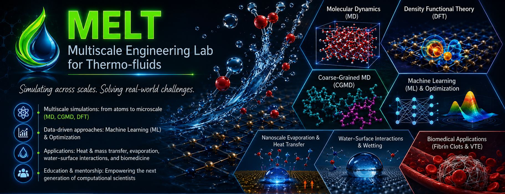
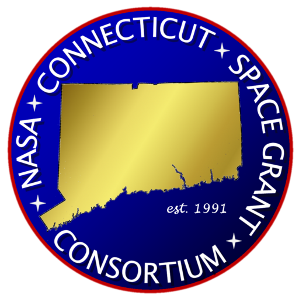
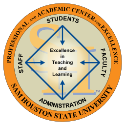
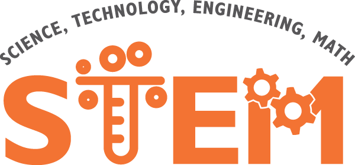

Research Vision
Our research focuses on force-field development and multiscale modeling of water, interfaces, evaporation, and biomolecular assembly. We use molecular dynamics (MD) simulations, coarse-grained molecular dynamics (CGMD), density functional theory (DFT) calculations, machine learning (ML), and optimization techniques to study interfacial heat and mass transfer, water–surface interactions, nanoscale evaporation, fibrin clot behavior, and venous thromboembolism.
At MELT, we are also committed to education and mentorship. Graduate and undergraduate students gain hands-on experience in high-performance computing (HPC), molecular simulation, first-principles calculations, data analysis, and interdisciplinary problem-solving.
Through this work, we aim to contribute to thermofluid sciences, nanotechnology, and computational biomedicine by combining theory, simulation, and practical application.

Notable work: Force Field Development for Water
Morse-D Parameters
Morse-D is an upgraded CGMD model for water that I developed based on an optimization technique. A detailed discussion is given in the paper: Yesudasan, S., Averett, R., & Chacko, S. (2020). Machine Learned Coarse Grain Water Models for Evaporation Studies. Preprints. DOI link.
| CGMD Model | D0 (kcal/mol) | α (1/Å) | r0 (Å) | rcut (nm) | dt (fs) |
|---|---|---|---|---|---|
| Morse-D | 1.686345 | 0.625349 | 5.8106 | 1.2 | 30 |
Funding Agencies



Research Grants
Awarded from 2021 to till date.
- Sumith Yesudasan (PI), Summer 2025, Summer Research Grant, Funding Agency: University of New Haven.
- Sumith Yesudasan (PI), Summer 2025, Research Fund Award, Funding Agency: University of New Haven.
- Sumith Yesudasan (PI), Fall 2024, “Thermal design of Biomedical Device for DNA detection”, Funding Agency: 12-15 Molecular Diagnostics.
- Sumith Yesudasan (PI), Thomas Filburn, Spring 2024, Nuclear Fellowship Program, Funding Agency: US Nuclear Regulatory Commission.
- Sumith Yesudasan (PI), Fall 2023, “Testing Passive Radiative Cooling for Spacecraft Thermal Protection”, Funding Agency: NASA CT Space Grant.
- Sumith Yesudasan (PI), Fall 2023, Entrepreneurial-Minded Learning project, Funding Agency: University of New Haven.
- Sumith Yesudasan (PI), Spring 2023, “Experimental Investigation of Cooling Efficiency of Liquid Cooling Computers”, Funding Agency: SHSU.
- Sumith Yesudasan (PI), Fall 2021, “Interfacing Arduino Microcontroller with Mechatronics Systems”, Funding agency: STEM center, SHSU.
Past Research
Multiscale Modeling of Thrombosis
Understanding the mechanics behind the formation of thrombo-embolisms can improve thrombolytic therapies and help treat patients with deep vein thrombosis.
Reactive Coarse Grain MD Method for Fibrin
We developed a reactive molecular dynamics method for coarse grain fibrinogen molecules to simulate fibrin clot formation, branching, and continuous fiber formation.
Molecular Mechanics of Fibrinogen and Hemoglobin
We characterized molecular-level mechanical properties of hemoglobin and related biomolecular systems, including anisotropic mechanical behavior.
Self Assembly and Spontaneous Sickle Fiber Formation
We developed coarse grain models of sickle hemoglobin to simulate spontaneous nucleus formation, self-assembly, and deformation related to sickling of red blood cells.
Solid-Liquid Heat Transfer in MD Simulations
Molecular dynamics simulations are used to study high heat flux removal and nanoscale heat transfer at liquid–solid interfaces.
Fast Local Pressure Estimation for LAMMPS
We developed an efficient 2D local pressure estimation algorithm as a post-processing tool for LAMMPS simulations.
Professional Memberships
- 2014–2023 Member of American Society of Mechanical Engineers (ASME).
- Life Member of Society for Mathematical Biology (SMB).